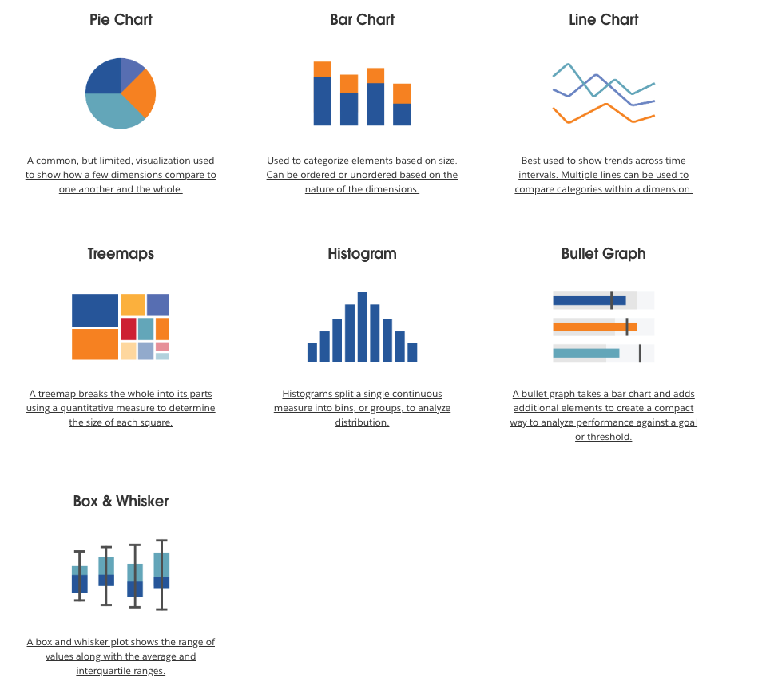
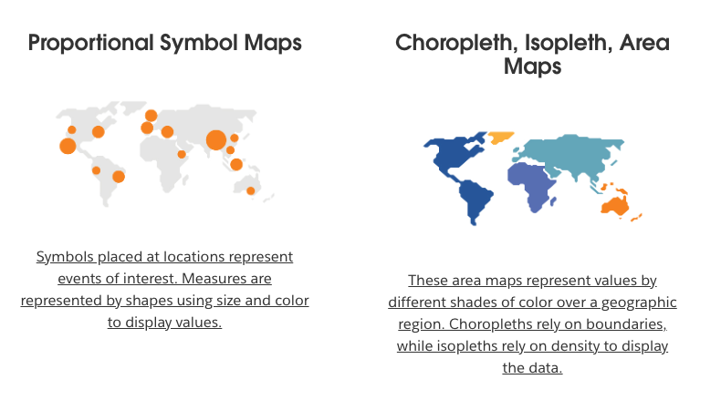
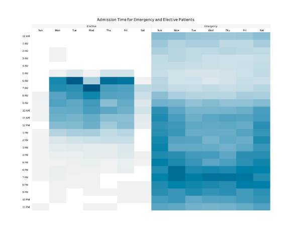
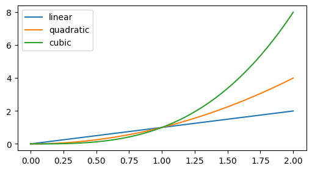
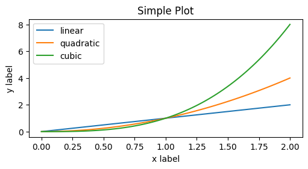
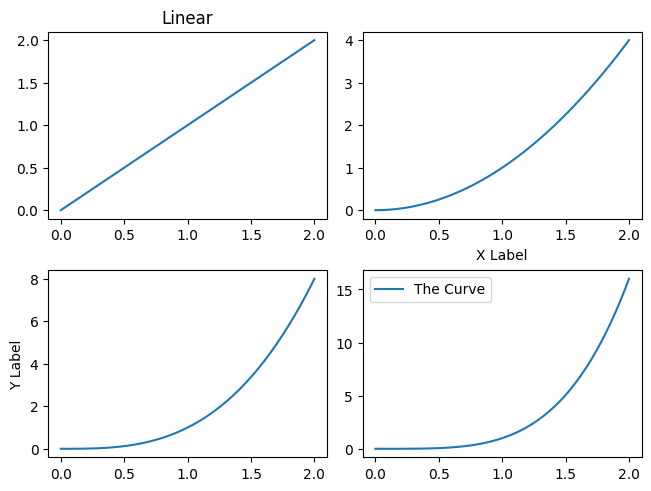
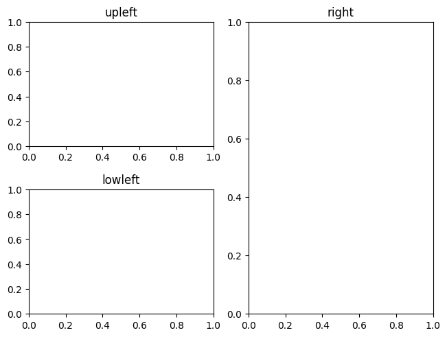

import matplotlib.pyplot as plt
import numpy as npData Visualization
Graphical display of data
Useful for
- data cleaning
- exploring data structure
- detecting outliers and unusual groups
- identifying trends and clusters
- spotting local patterns
- evaluating modeling output
- Presenting results.
Used to convey a message across, or to understand data better.
A graphic won’t say the whole story.
Presentation graphics are used to convey known information and are often designed to attract attention.
Exploratory graphics are used to find new information and should direct attention to information.
Source - Why Is Data Visualization Important? What Is Important in Data Visualization?
1. Types
some below
Chart:

GeoSpatial

Heatmaps
 Bonus Point activity worth 2 points.- https://www.tableau.com/learn/articles/data-visualization#big-data
2. Good and Bad Vizualisation
Examples from : https://www.codeconquest.com/blog/12-bad-data-visualization-examples-explained/#htoc-what-does-this-graph-show


3. Key Principles of Effective Data Visualization
- Choosing the right visual representation for different types of data.
- Understanding the target audience and their needs.
- Designing for clarity, simplicity, and accuracy.
- Highlighting the main message and avoiding clutter.
- Using color, size, and shape effectively.
4. Python Libraries / Tools
- matplotlib
- plotly
- seaborn
Checkout -
- https://datavizcatalogue.com/search.html
- https://python-graph-gallery.com/
Matplotlib
Excellent Start - https://matplotlib.org/stable/tutorials/introductory/quick_start.html#

- Plot linear, quadratic, and cubic functions from 0 to 2, with 100 equally spaced intervals
x = np.linspace(0, 2, 100) # Sample data.
xarray([0. , 0.02020202, 0.04040404, 0.06060606, 0.08080808,
0.1010101 , 0.12121212, 0.14141414, 0.16161616, 0.18181818,
0.2020202 , 0.22222222, 0.24242424, 0.26262626, 0.28282828,
0.3030303 , 0.32323232, 0.34343434, 0.36363636, 0.38383838,
0.4040404 , 0.42424242, 0.44444444, 0.46464646, 0.48484848,
0.50505051, 0.52525253, 0.54545455, 0.56565657, 0.58585859,
0.60606061, 0.62626263, 0.64646465, 0.66666667, 0.68686869,
0.70707071, 0.72727273, 0.74747475, 0.76767677, 0.78787879,
0.80808081, 0.82828283, 0.84848485, 0.86868687, 0.88888889,
0.90909091, 0.92929293, 0.94949495, 0.96969697, 0.98989899,
1.01010101, 1.03030303, 1.05050505, 1.07070707, 1.09090909,
1.11111111, 1.13131313, 1.15151515, 1.17171717, 1.19191919,
1.21212121, 1.23232323, 1.25252525, 1.27272727, 1.29292929,
1.31313131, 1.33333333, 1.35353535, 1.37373737, 1.39393939,
1.41414141, 1.43434343, 1.45454545, 1.47474747, 1.49494949,
1.51515152, 1.53535354, 1.55555556, 1.57575758, 1.5959596 ,
1.61616162, 1.63636364, 1.65656566, 1.67676768, 1.6969697 ,
1.71717172, 1.73737374, 1.75757576, 1.77777778, 1.7979798 ,
1.81818182, 1.83838384, 1.85858586, 1.87878788, 1.8989899 ,
1.91919192, 1.93939394, 1.95959596, 1.97979798, 2. ])plt.figure(figsize=(5, 2.7), layout='constrained')<Figure size 500x270 with 0 Axes><Figure size 500x270 with 0 Axes>plt.figure(figsize=(5, 2.7), layout='constrained')
plt.plot(x, x, label='linear') # Plot some data on the (implicit) axes.
plt.plot(x, x**2, label='quadratic') # etc.
plt.plot(x, x**3, label='cubic')
plt.legend()<matplotlib.legend.Legend at 0x117cadcc0>
plt.figure(figsize=(5, 2.7), layout='constrained')
plt.plot(x, x, label='linear') # Plot some data on the (implicit) axes.
plt.plot(x, x**2, label='quadratic') # etc.
plt.plot(x, x**3, label='cubic')
plt.xlabel('x label')
plt.ylabel('y label')
plt.title("Simple Plot")
plt.legend()
plt.show()
- Multiple graphs in one figure
fig, axs = plt.subplots(2, 2, layout='constrained')
axs[0][0].plot(x,x)
axs[0][0].set_title("Linear")
axs[0][1].plot(x,x**2)
axs[0][1].set_xlabel("X Label")
axs[1][0].plot(x,x**3)
axs[1][0].set_ylabel("Y Label")
axs[1][1].plot(x,x**4, label="The Curve")
axs[1][1].legend()
plt.show()
fig, axd = plt.subplot_mosaic([['upleft', 'right'],
['lowleft', 'right']], layout='constrained')
axd['upleft'].set_title('upleft')
axd['lowleft'].set_title('lowleft')
axd['right'].set_title('right')Text(0.5, 1.0, 'right')